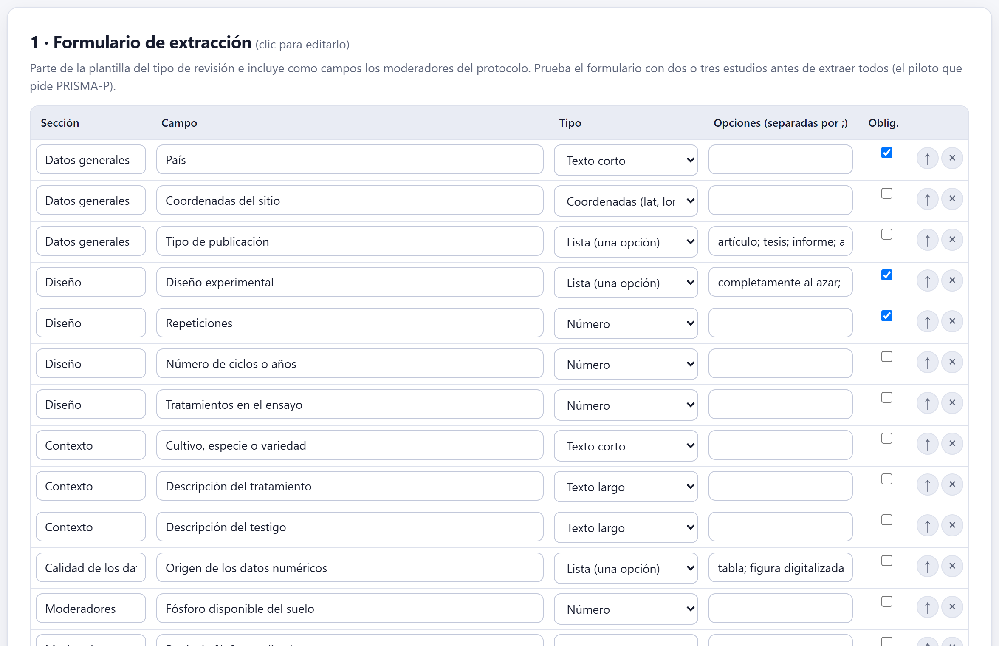
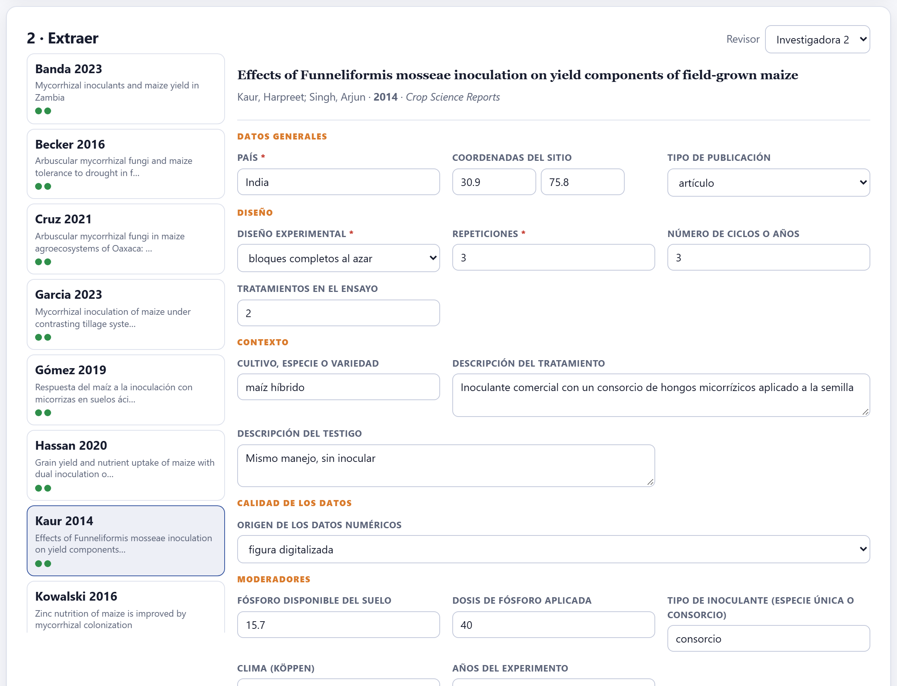
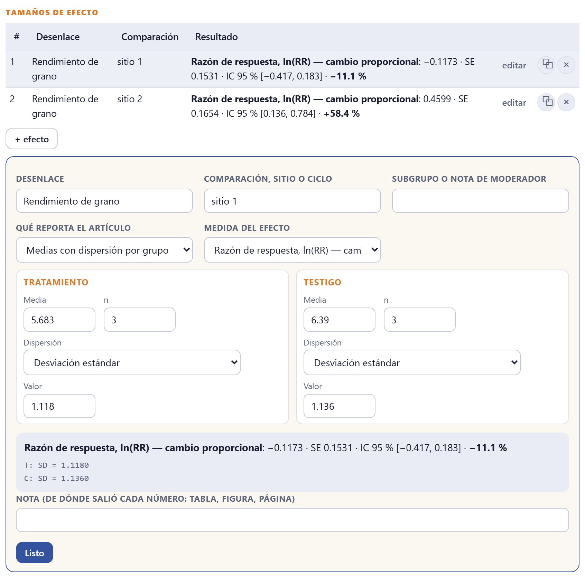
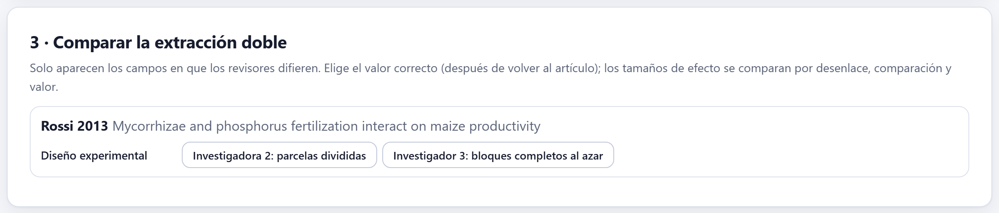
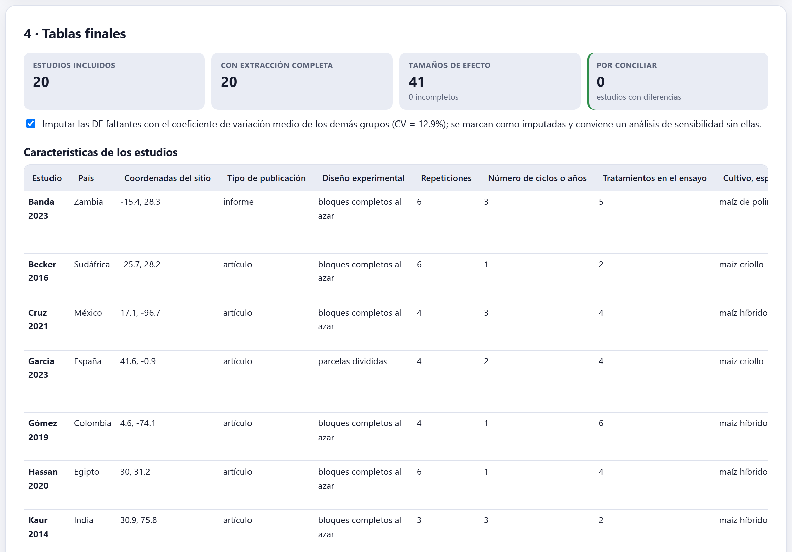

Un formulario que diseñas tú, llenado por estudio y por revisor; una calculadora que convierte lo que el artículo reporta —medias con DE, EE, IC o CV; la DMS, el EED o el CV del ANOVA; medianas; t, F, p o conteos— en el tamaño de efecto con su varianza; la comparación de la extracción doble; y las tablas finales que usarán la síntesis y el manuscrito.
La primera tarjeta está plegada: 1 · Formulario de extracción (clic para editarlo). El formulario parte de una plantilla del tipo de revisión y agrega como campos los moderadores que declaraste en el protocolo, para que se extraigan desde el principio.

| Tipo de campo | Para qué |
|---|---|
| Texto corto · Texto largo | País, cultivar; descripción del tratamiento y del testigo. |
| Número | Repeticiones, años, fósforo del suelo, dosis. Los numéricos pueden ser moderadores de una meta-regresión. |
| Lista (una opción) · Lista (varias opciones) | Diseño experimental, tipo de publicación, origen de los datos; las opciones se separan con punto y coma. Las listas pueden ser moderadores de subgrupos. |
| Sí / no | Una condición que se cumple o no. |
| Coordenadas (lat, lon) | El sitio del experimento, en grados decimales. |
Cada campo lleva su sección, puede ser obligatorio (se marca con * al extraer) y se reordena con ↑. + campo agrega uno; Volver a la plantilla descarta los cambios. Prueba el formulario con dos o tres estudios antes de extraer todos: es el piloto que pide PRISMA-P, y cambiar un campo después obliga a volver a todos los artículos.

A la izquierda están los estudios incluidos del Bloque 5, cada uno con autor y año; los informes ligados aparecen juntos como un solo estudio. Al elegir uno, el formulario se llena para el Revisor activo, arriba a la derecha. Todo se guarda al escribir.
El campo de nota de cada efecto pide de dónde salió cada número: tabla, figura, página. Cuando otro revisor, un árbitro o tú misma dentro de seis meses quieran comprobar un dato, esa nota ahorra releer el artículo completo. Si el número se digitalizó de una figura, dilo: es menos preciso que uno de una tabla.
Al pie del estudio está la tabla de tamaños de efecto: una fila por comparación —un sitio, un ciclo, una dosis—, con su desenlace, su resultado y los botones para editarla, duplicarla o quitarla. + efecto abre el editor.

Cada fila lleva el desenlace (los del protocolo), la comparación (sitio, ciclo o dosis), un subgrupo o nota de moderador opcional, qué reporta el artículo y la medida del efecto. Según lo que reporta, la calculadora pide unos datos u otros:
| Qué reporta el artículo | Qué pide y cómo convierte |
|---|---|
| Medias con dispersión por grupo | Media y n de cada grupo, con la dispersión como desviación estándar, varianza, error estándar (DE = EE·√n), intervalo de confianza de la media (DE = √n·(U − L)/(2·t), con t si n < 60) o coeficiente de variación (DE = CV·media/100). |
| Medias con la DMS, EED, EEM o CV del ANOVA | La DE común del experimento: desde la DMS (con los grados de libertad del error, o deducidos del diseño —completamente al azar, bloques o cuadrado latino— y su α), desde el EED (DE = EED·√(r/2)), el EEM (DE = EEM·√r), el CV del experimento o el cuadrado medio del error (DE = √CME). |
| Medianas con cuartiles o rango | Estima media y DE (Wan et al. 2014). |
| Estadístico t, F con 1 gl, valor p bilateral, IC de la diferencia | La diferencia de medias estandarizada (g de Hedges), con los n de cada grupo; para F y p, el signo lo pones tú. |
| Conteos (tabla 2×2) | Razón de riesgos, razón de momios o diferencia de riesgos. |
| Correlación | La z de Fisher, con el n. |
| Efecto ya calculado | El efecto con su error estándar o su varianza, tal como lo da el artículo. |
La razón de respuesta (Hedges et al. 1999) mide el cambio proporcional del tratamiento frente al testigo, así que se compara bien entre sitios con rendimientos muy distintos. Necesita medias positivas de una variable con cero natural. Su varianza crece cuando las repeticiones son pocas o el experimento es variable: por eso los ensayos pequeños pesan menos en el Bloque 8.
| Si el estudio reporta varios sitios, ciclos o dosis por separado | entonces una fila por cada uno: el modelo multinivel del Bloque 8 sabe que vienen del mismo estudio. |
| Si reporta además el promedio de todos | entonces no lo extraigas como otra fila: contaría dos veces los mismos datos. |
| Si tiene varios tratamientos contra un solo testigo | entonces una fila por tratamiento y anótalo: comparten el testigo, y sus efectos no son independientes. |
| Si solo hay figura | entonces digitaliza las medias y las barras, y marca el origen como «figura digitalizada». |
| Si no hay ninguna medida de dispersión | entonces escribe a los autores; si no responden, la imputación de la sección 6.4. |
Muchos experimentos agronómicos publican las medias sin su dispersión. La casilla de la tarjeta de tablas finales Imputar las DE faltantes con el coeficiente de variación medio de los demás grupos las estima con el CV medio de los estudios que sí la reportan (Lajeunesse 2013) y muestra ese CV —en el ejemplo, 12.9 %—. Las filas imputadas se marcan como tales, y el Bloque 8 hace siempre un análisis de sensibilidad sin ellas.
Declárala en el protocolo (sensibilidad «excluir estudios con dispersión imputada»), repórtala en los métodos y mira si el resultado cambia sin las filas imputadas. Si cambia mucho, el resultado depende de datos que no existen: dilo.

Cuando el protocolo pide extracción por duplicado, cada revisor llena su propio formulario sin ver el del otro. Esta tarjeta muestra solo los campos en que difieren, estudio por estudio, con el valor de cada revisor como botón: se vuelve al artículo y se elige el correcto. Los tamaños de efecto se comparan por desenlace, comparación y valor. Mientras un campo tenga diferencias, la tabla de características lo marca como pendiente.
Los dos revisores del ejemplo difirieron en tres datos de 20 estudios: las repeticiones de Kaur 2014 (3 o 4), el origen de los datos de Oliveira 2018 (tabla o texto) y el diseño de Rossi 2013 (parcelas divididas o bloques). Las tres se conciliaron volviendo a los artículos.

Arriba, cuatro cifras: estudios incluidos, estudios con extracción completa, tamaños de efecto (y cuántos incompletos) y estudios por conciliar. Debajo, dos tablas con los valores finales —los acordados o los conciliados—:
{{table:characteristics}} en el Bloque 9).⤓ Tabla de efectos (.csv) y ⤓ Características (.csv) descargan ambas: son el material suplementario de datos que piden cada vez más revistas, y la entrada para quien quiera repetir el análisis con otro programa.
La calculadora dice qué falta para cada tipo de entrada: «La razón de respuesta necesita medias positivas y n de ambos grupos», «Faltan datos para calcular el efecto». Las tarjetas avisan si aún no hay estudios incluidos (Bloque 5), si hay campos por conciliar y cuántas filas de efecto están incompletas.